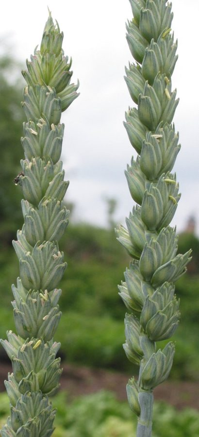

गेहूंWheat
Triticum aestivum · Poaceae · FLR-0051

- Scientific name
- Triticum aestivum L.
- Family
- Poaceae
- Hindi
- गेहूं
- Status here
- cultivated
- IUCN
- not evaluated
When to look कब देखें
Expected mainly in January, February, March, April, October, November, December.
गेहूं / Wheat
Triticum aestivum L. — Poaceae
गेहूं — उत्तर प्रदेश की मुख्य खाद्यान्न फसल (staple crop) है, जिसकी खेती शीत ऋतु (रबी मौसम) के दौरान व्यापक रूप से की जाती है। यह एक वार्षिक घास (annual grass) है जो 60 से 120 सेमी की ऊंचाई तक बढ़ती है। इसके पौधे में सीधे, खोखले तने (tillers) होते हैं जिन पर लंबी, संकरी पत्तियाँ लगती हैं। पौधे के शीर्ष पर एक सघन स्पाइक (ear/बाल) विकसित होती है जिसमें अनाज के दाने सुरक्षित रहते हैं। पूर्वी उत्तर प्रदेश के बस्ती जिले में नवंबर-दिसंबर में बोया गया गेहूं खेतों को हरा-भरा कालीन बना देता है, जो मार्च-अप्रैल में पककर सुनहरे रंग में बदल जाता है। गेहूं का दाना रोटी और अन्य स्थानीय खाद्य पदार्थों का मुख्य स्रोत है, जबकि इसका सूखा भूसा (bhusa) साल भर मवेशियों के सूखे चारे के रूप में उपयोग किया जाता है। यह फसल क्षेत्र के कृषि चक्र और ग्रामीण अर्थव्यवस्था का मुख्य आधार है।
Quick Identification त्वरित पहचान
| Feature | Description |
|---|---|
| Form | Tufted annual grass (60–120 cm tall) producing multiple upright, hollow stems (tillers) from the base |
| Leaves | Simple, flat, linear, grass-like (15–30 cm long, 1–2 cm wide), smooth, with a distinct ligule and auricles at the junction of the sheath and blade |
| Inflorescence | Compact, terminal spike (5–12 cm long) called the "ear" or "head," carrying multiple spikelets arranged alternately on a zig-zag axis |
| Glumes & Awns | Spikelets are protected by tough outer scales (glumes); many regional varieties carry long, stiff, needle-like bristles called "awns" projecting from the spike |
| Fruit | Oval or oblong dry grain (caryopsis, 5–8 mm long) with a longitudinal groove down one side and a tuft of tiny hairs at the tip |
Field tip: The dominant grass crop covering the entire Gangetic plains during the winter months, producing green, dense fields that turn golden-brown by spring, capped by terminal bristly seed heads.
Morphology आकारिकी
Biometrics (typical measurements for irrigated bread wheat in eastern UP):
| Feature | Measurement |
|---|---|
| Plant height | 60–120 cm |
| Leaf length | 15–30 cm |
| Leaf width | 1–2 cm |
| Spike (ear) length | 5–12 cm |
| Grain length | 5–8 mm |
Stems & Leaves: The tillers are smooth, hollow, and divided by solid nodes. Auricles at the leaf base are claw-like and slightly hairy, a key character separating wheat seedlings from other winter grasses.
Spikelet structure: Each spikelet contains 3 to 9 flowers (florets), out of which 2 to 5 develop into mature grains. Self-pollination takes place inside the florets before they open.
Associated Species / Interactions सहजीवी संबंध
Winter cropland ecosystem host.
- Avian foragers: During and after harvest, the grain-rich fallows are visited by massive flocks of sparrows (
[BRD-0007 House Sparrow]), Rock Pigeons ([BRD-0024 Rock Pigeon]), and doves ([BRD-0025 Laughing Dove]). The Common Hoopoe ([BRD-0033 Common Hoopoe]) actively probes the soil of wheat beds for grubs. - Insect harbor: Provides shelter for agricultural insects, including ladybirds (
[INS-0028 Transverse Ladybird]), which breed in wheat fields to prey on aphids. - Weed associates: The crop beds are shared with classic winter weeds like Phalaris minor (wheat canary grass / Gulli danda) and Chenopodium album (Bathua / बथुआ).
- Abiotic interaction: Primarily wind-pollinated; dry western winds (Loo) in late March accelerate the final drying and ripening of the grain.
Life Cycle / Phenology जीवन चक्र
- Sowing: Done in late autumn (November–December) after the fields are prepared following the Kharif harvest.
- Vegetative & Tillering: The seeds germinate within 5–7 days, producing multiple side tillers during December–January, covering the soil.
- Jointing & Flowering: Stems elongate and the green "ears" emerge in February, undergoing self-pollination.
- Milky & Dough stage: Grains accumulate starch during late February and March, transforming from a milky liquid into a firm dough.
- Harvesting: The golden-dry plants are cut in late March to April, followed by threshing to separate the grain from the chaff.
Pests and Diseases कीट और रोग
- Wheat Aphid: Small green insects (Sitobion avenae) suck sap from the developing ears in cold, cloudy weather (January–February), causing shriveled grains.
- Brown/Leaf Rust: Fungal pathogen Puccinia recondita forms orange-brown pustules on leaves, reducing yield.
- Termites: Dry soil conditions in early winter attract subterranean termites (
[SFL-0001]relative), which damage the roots and base of young tillers. - Smut: Loose smut (Ustilago nuda) replaces the grain inside the spikelets with a black, powdery mass of fungal spores.
Agricultural / Human Relevance कृषि प्रासंगिकता
UP's primary winter staple.
- Staple food: Ground into whole-wheat flour (atta) to make chapatis, rotis, and puris, the dietary foundation of millions in northern India. Also processed into semolina (suji) and refined flour (maida).
- Animal feed: The leftover straw (bhusa) is collected, stored in thatched huts, and served as the primary dry fodder for buffaloes and cows throughout the year.
- Regional cultivars: Dominant varieties sown in Basti include high-yielding strains developed by ICAR, such as HD-2967, HD-3086, DBW-187, and K-307.
Traditional and Ethnobotanical Use
- Prasad and ritual food: Wheat flour is used to make sacred sweet offerings (halwa and panjiri) in temples and for religious ceremonies. Panjiri — roasted wheat flour mixed with sugar, ghee, and dry fruits — is also given to women for post-childbirth recovery.
- Wheat bran decoction (Choker ka Pani): The outer bran (choker) is boiled in water and taken daily by the elderly and diabetic patients as a traditional remedy for constipation and high blood sugar.
- Straw fumigation: Bundles of wheat straw are burned slowly near cattle sheds to produce smoke that repels mosquitoes and ticks from livestock during damp monsoon nights.
- Dough poultice: Wheat flour dough soaked overnight in warm water is applied as a warm compress over boils, abscesses, and festering wounds to draw out pus.
Cultivation Calendar
| Stage | Month(s) |
|---|---|
| Field preparation | October–November (ploughing, pre-sowing irrigation) |
| Sowing | November–December |
| Vegetative growth | December–February (requires 4–6 irrigations at critical stages) |
| Flowering | February |
| Harvest | Late March–April |
Expected Locally स्थानीय रूप से अपेक्षित
Not a field record. Written from published accounts for eastern Uttar Pradesh. No confirmed local sighting yet — if you have seen it, that is what the atlas needs.
अभी तक स्थानीय पुष्टि नहीं। यह विवरण प्रकाशित स्रोतों से है, किसी अवलोकन से नहीं।
Widespread across all blocks of Basti district, representing the dominant winter landscape. Fields in Harraiya and Vikramjot blocks are irrigated using tube wells connected to canal networks. During April, village lanes are filled with tractor-trolleys transporting golden wheat stalks to threshers, and the smell of fresh straw dust fills the air.
Distribution वितरण
Global range: Originally domesticated in the Fertile Crescent of the Middle East. It is now cultivated globally in temperate and subtropical zones, representing the world's most widely grown crop.
In India: Cultivated in all northern and central states; the "wheat belt" is centered in Punjab, Haryana, Uttar Pradesh, and Madhya Pradesh.
In Uttar Pradesh: The state is the largest producer of wheat in India, with crops grown in every plain district.
In Basti district / eastern UP: Cultivated resident; the principal Rabi crop.
Research Questions शोध प्रश्न
- How does the grain yield of wheat variety HD-2967 compare to DBW-187 under Basti's traditional tube-well irrigation practices? / बस्ती की पारंपरिक ट्यूबवेल सिंचाई के तहत गेहूं की किस्म HD-2967 की उपज DBW-187 की तुलना में कैसी होती है?
- What is the density of Sitobion avenae (wheat aphid) in crop fields that practice intercropping with mustard compared to mono-cropped wheat? / मोनो-क्रॉप गेहूं की तुलना में सरसों के साथ सह-फसली खेती वाले खेतों में गेहूं के चेपा (aphid) की संख्या पर क्या प्रभाव पड़ता है?
- Does the timing of the first crown root initiation (CRI) watering affect the final tiller count of wheat in sandy-loam soils?
- Which weed species is the most difficult to control manually in the local wheat fields?
- Can children make a simple chart tracking how many days it takes for a wheat seed sown in a cup of soil to grow its first three tillers? — A simple developmental biology school activity.
Similar Species मिलती-जुलती प्रजातियाँ
| Species | Key Difference | हिंदी |
|---|---|---|
Oryza sativa (Paddy [FLR-0014]) | Sown in monsoon (Kharif); grown in flooded fields; inflorescence is a branched loose panicle (not a tight spike). | धान — मानसून की फसल, बाढ़ वाले खेत, बिखरी हुई बाली |
Saccharum officinarum (Sugarcane [FLR-0034]) | Semi-perennial giant grass; stems are thick (2–4 cm diameter) and solid, containing sweet juice; grows up to 3–4 m. | गन्ना — विशाल ठोस तना, बारहमासी फसल |
| Hordeum vulgare (Barley) | Spikes have much longer, parallel, upward-pointing bristles (awns); spikelets are arranged in a 6-row or 2-row layout; grains are husked. | जौ — अधिक लंबी बालियाँ, छः-पंक्ति विन्यास, छिलके वाले दाने |
Taxonomy & Classification वर्गीकरण
Original description. Carl Linnaeus described Bread Wheat as Triticum aestivum in 1753 in his seminal work Species Plantarum (Vol. 1, p. 85). The type locality was Europe. The genus name Triticum is the classical Latin name for wheat, derived from the Latin tritus (threshed/rubbed). The specific name aestivum is Latin for "of summer," as it is a spring-sown summer crop in northern Europe.
Subspecies. Monotypic as a species, but represented by thousands of cultivars and genetic selections adapted to regional agro-climatic zones.
Family and order placement. Placed in the order Poales, family Poaceae (grass family), subfamily Pooideae, tribe Triticeae.
Phylogenetic notes. Triticum aestivum is an allohexaploid species ($2n = 6x = 42$ chromosomes), possessing three sets of genomes (AABBDD) derived from the natural hybridization of three distinct diploid wild grass species over millennia of evolutionary selection.
IUCN status rationale. Not evaluated (NE) by the IUCN Red List. As a globally cultivated staple crop species, it is under no threat of extinction.
Photo Gallery फोटो गैलरी
References संदर्भ
- Linnaeus, C. (1753). Species Plantarum. Laurentii Salvii, Holmiae, Vol. 1, p. 85. [original description]
- Indian Council of Agricultural Research (2021). Handbook of Agriculture. ICAR, New Delhi.
- ICAR-Indian Institute of Wheat and Barley Research (IIWBR). Package of Practices for Wheat Cultivation in Eastern Plains. IIWBR Extension Bulletin, Karnal.
- Brandis, D. (1906). Indian Trees. Archibald Constable & Co., London.
- Botanical Survey of India. State Flora Series: Flora of Uttar Pradesh. BSI, Kolkata.
- GBIF Occurrence Data — Triticum aestivum (2026). GBIF taxon key: 7795888.
Source file: species/flora/crops/wheat.md